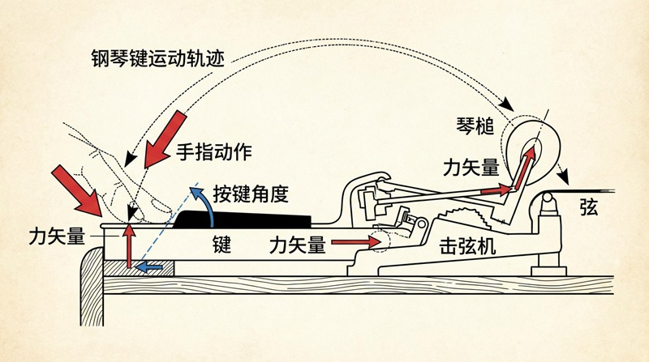
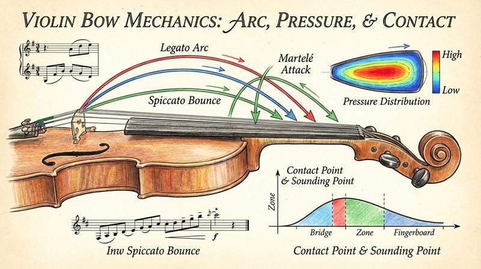

返回课程列表
第四课
动力学
演奏技巧中的力与运动关系
⏱️ 约55分钟
每一次演奏都是力与运动的精确控制。钢琴家的触键力度、小提琴家的弓压变化、鼓手的击打角度——这些都是动力学的完美应用。
钢琴演奏的动力学
钢琴的音量完全由琴锤击弦的速度决定。手指施加的力通过杠杆机构放大，控制琴锤速度。从pp到ff的力度变化需要精确的肌肉控制。

键盘乐器的力学控制
钢琴演奏中的动力学原理：
- 触键速度决定音量：快速下键=大音量，慢速下键=小音量
- 杠杆放大：钢琴击弦机构将手指运动放大约5倍传递给琴锤
- 重力演奏法：利用手臂重量而非肌肉力量，减少疲劳提高表现力
- 踏板控制：延音踏板抬起阻尼器，让所有弦自由共振
弦乐演奏的力学分析
小提琴演奏涉及复杂的力学：弓压、弓速、接触点三个参数共同决定音色和音量。弓与弦之间的粘滑摩擦是发声的关键。

弓弦乐器的演奏力学
小提琴演奏中的力学要素：
- 弓压：增大弓压使弦振幅增大，音量变大，但过大会导致声音粗糙
- 弓速：加快弓速使能量输入增加，音色更明亮
- 接触点：靠近琴桥音色明亮（高次泛音多），靠近指板音色柔和
- 揉弦：手指在弦上快速滚动改变有效弦长，产生频率调制效果